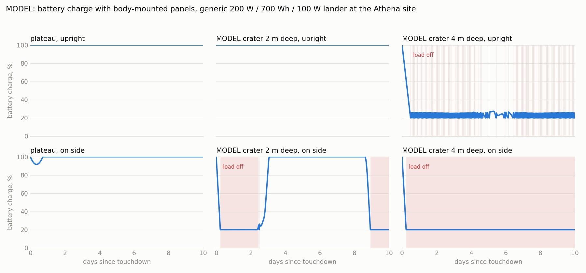
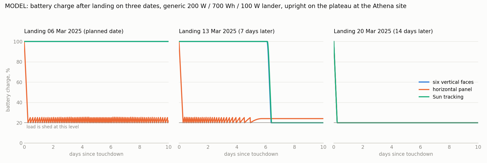
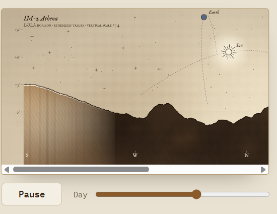
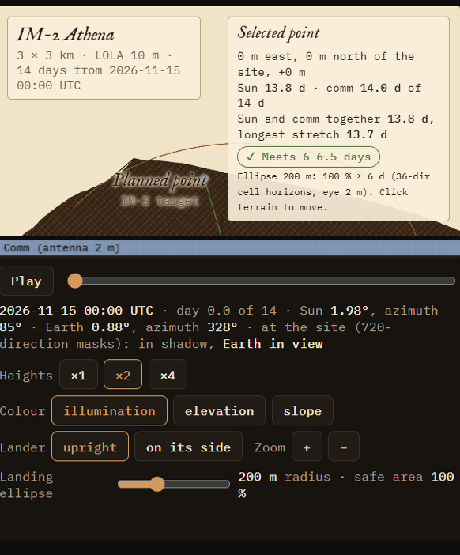

Topocentric ephemeris, 10 m LOLA horizon ray-casting, dual-height solar & antenna geometry, and coupled energy + radio link analysis to replace smooth-sphere guesswork at the lunar south pole.
At 80° S–90° S, sunlight skims the ground between −5.4° and +5.4°: a 2-metre crater wall decides mission survival.
| Planning Assumption | Generic Calculators | LUNARIS Solution |
|---|---|---|
| Horizon Model | Zero-degree flat / smooth sphere | 720-azimuth LOLA 10m/40m masks + lunar curvature out to 150 km |
| Hardware Height | Single fixed height or hidden 2 m | Independent Panel Hp (Sun) & Antenna Ha (Earth) across all tabs |
| Landing Slip | Single snapshot date only | 12-month heatmap showing exact drop at +7 d and +14 d slips |
| Micro-Terrain | Hides 10 m grid limits | Interactive 3D LOLA patch + explicit 20 m sub-grid crater model |
| Short Windows | False “Does not meet” when period < 6 d | Explicit “N/A: period shorter than requirement” guard |
| Non-Polar Sites | Mixed silently or crashes | Honest smooth-sphere fallback + recommends nearest polar LOLA site |
Just 716 m from Athena on a +36.7 m ridge crest, an antenna at ground level (0 m) suffers self-blocking (71.9% Earth LOS — worse than the plateau’s 79.4%). Raising the antenna by just 1 m jumps Earth visibility to 80.1% (+8.2 pp).
One unified scenario in the sidebar drives every chart, ink plate, comparison table, heatmap, and 3D terrain mesh.
Skyfield + NASA NAIF JPL DE421 + MOON_ME_DE421 orientation kernel (1900–2050). Computes true solar disk radius (~0.266°), Earth angular radius, optical libration & distance. Zero atmospheric refraction.
PGDA #90 DEMs (10 m near, 40 m to 150 km) ray-cast every 0.5° with exact spherical drop:
atan2(r₁cosθ − r₀, r₁sinθ).
Precomputed for 19 polar sites × 5 heights (95 files).
Panel Height (Hp) evaluates solar disk clearance for power. Antenna Height (Ha) independently evaluates Earth disk clearance (center or any-limb switch) for radio line-of-sight.
Solar power P = S·A·η·max(0,n·s)·V with 28% GaAs cells, 700 Wh battery, 100 W load, 80% DoD shed & taper charge. Coupled with 2.2 GHz S-band DSN 34 m link margin.
| Link Parameter (384,400 km) | Baseline Value | Physical Note |
|---|---|---|
| Carrier / TX Power / Antenna | 2.2 GHz · 10 W · 6 dBi | Generic S-band MGA lander (EIRP = 14.0 dBW) |
| Free-Space Path Loss (FSPL) | 210.99 dB | Dynamically varies with true Earth-Moon distance |
| Receive Station (DSN) | 34 m · η = 0.6 · T = 40 K | Station G/T = 39.65 dB/K; 2 dB atm/pol loss |
| Downlink Margin (100 kbps) | +16.25 dB (Eb/N0 = 19.25 dB) | C/N₀ = 69.25 dB-Hz vs 3.0 dB req; < 6° multipath flag |
* Both power (tracking / vertical / horizontal faces) and antenna gains can be tuned live in the Sky tab.
Reconstructing the March 6, 2025 touchdown using real LOLA terrain, a parametric 20 m bowl crater, and a coupled 700 Wh battery model.

Athena's plateau was sunlit for all 10.0 planned days. However, inside a 20 m bowl crater (diameter per LROC; depths 2 m & 4 m modeled), an upright 4.0 m deck clears the rim, while a side-resting body (0.8–1.6 m) faces 3.6°–20.6° crater walls and sees 0.0 h sunlight in the first 12.75 hours.

With grazing polar sunlight (≤ 5.36°), a flat horizontal top panel produces only 15.5 W (shedding load in 6.2 h even on the ideal date!), whereas six vertical faces or Sun tracking average ~200 W. Shifting touchdown by +7 days slashes sunlit days from 10.0 d to 6.12 d (86.8 h blackout).
Live output of LUNARIS for the current competition date (2026-11-15 00:00 UTC · 14-day period · 2 m panels & antenna).

Sky (Plotly panorama + interactive 1610 ink Plate) · Compare (2–4 site+date scenarios side-by-side) · Launch Slip (year-round heatmap 1950–2048) · Site (3D inspector) · Research · Validation.
| Landing Site / Region | Sphere | LOLA Real | Verdict (6–6.5 d) |
|---|---|---|---|
| IM-2 Athena 84.79° S · Mons Mouton |
14.00 d | 13.74 d | Meets |
| Connecting Ridge Artemis III · 89.46° S |
11.12 d | 12.46 d | Meets (100% Sun) |
| Malapert Massif Artemis III · 85.98° S |
13.95 d | 10.74 d | Meets |
| IM-1 Odysseus (partial mask) 80.13° S · Malapert A |
12.89 d | 10.03 d | Meets |
| de Gerlache Rim 2 Artemis III · 88.25° S |
12.04 d | 7.84 d | Meets (+1.3 d margin) |
| Peak Near Shackleton Terrain trap revealed! |
10.81 d | 5.62 d | Does Not Meet |
At Peak Near Shackleton on 15 Nov 2026, smooth-sphere geometry falsely promises 14 d Sun and 10.81 d joint link, whereas real LOLA terrain exposes a 4.38-day loss that drops continuous ops below the 6-day Artemis requirement.
Every polar preset loads a precomputed 3D patch with dynamic shadow playback, posture toggle, and clickable safety verdicts.
Site verdicts & timeline bars come from high-precision 720-direction 150 km masks at sidebar Hp / Ha. Cell ellipse shadows use 36-direction 30 km per-cell horizons (verified within 0.09° mean of full masks).

Every astronomical, geometric, and illumination output was cross-checked against external NASA benchmarks and an independent verifier.
| Verification Benchmark | Sample / Scope | Measured Agreement | Status |
|---|---|---|---|
| JPL Horizons Ephemeris | 5 sites × 300 random instants × 2 bodies | 0.000196° max · 0.000007° mean (tol. 0.01°) | Verified |
| Independent Mask Re-implementation | 720 azimuths recomputed by separate agent code | < 0.001° difference (caught & fixed 0.36° bug) | Verified |
| Mazarico et al. (2011) 18.6-yr Map | PGDA #69 Sun & Earth over full nodal cycle | Athena 44.4% vs 46.8% · Summits 81–85% vs 83–88% · Earth ±0.2 pp | Verified |
| 5 m Shape-from-Shading (Bertone 2025) | PGDA #104 vs 10 m LOLA overlap at Athena | Height σ = 0.7 m · Mask max Δ 0.005° | Verified |
| Automated Regression & Cloud Suite | 32 pytest checks + zero-DEM cloud boot & browser QA | 32 / 32 Passed (pandas datetime fix covered) · 0 console errors | 100% Pass |